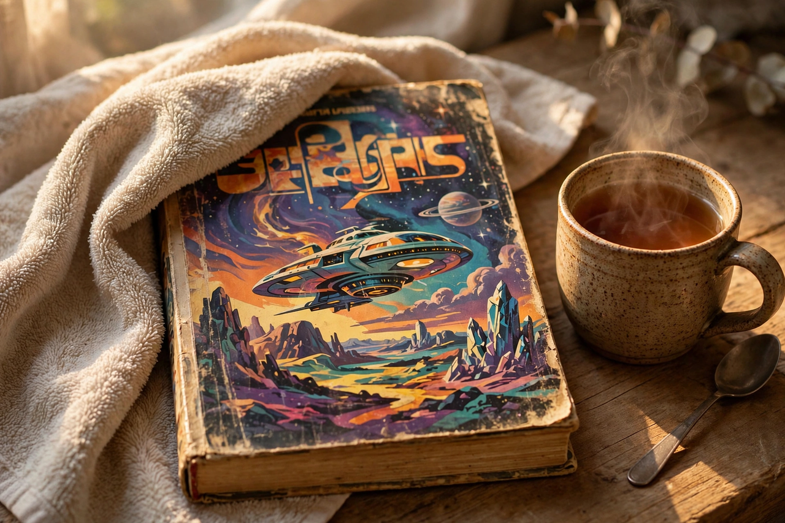

Douglas Adams
| Born | 11 March 1952, Cambridge, England |
|---|---|
| Died | 11 May 2001 (aged 49), Montecito, California |
| Occupation | Author, humorist, screenwriter |
| Notable works | The Hitchhiker's Guide to the Galaxy; Dirk Gently; Last Chance to See |

[Image: a towel draped over a well-worn paperback of The Hitchhiker's Guide to the Galaxy, with a cup of tea beside it]Douglas Noel Adams (11 March 1952 – 11 May 2001) was an English author and humorist, best known as the creator of The Hitchhiker's Guide to the Galaxy, which began as a BBC radio comedy in 1978 and grew into a series of five novels (described as a 'trilogy in five parts'), selling millions of copies and spawning adaptations in nearly every medium. He also wrote the Dirk Gently novels and the environmental book Last Chance to See.
Adams worked as a script editor and writer on Doctor Who, and was a noted technology enthusiast and atheist; the evolutionary biologist Richard Dawkins dedicated The God Delusion (2006) to his memory.
The Hitchhiker's Guide
The Guide follows Arthur Dent, an ordinary Englishman rescued from Earth moments before its demolition to make way for a hyperspace bypass, by his friend Ford Prefect, a researcher for the eponymous Guide. Its inventions — the Babel fish, the Infinite Improbability Drive, Marvin the Paranoid Android, and the answer to the Ultimate Question of Life, the Universe and Everything being 42 — entered popular culture permanently.
The books combine science-fiction invention with satire of bureaucracy, religion, business and human self-importance; Adams's deadlines were legendary ('I love deadlines. I love the whooshing noise they make as they go by').
Later work and death
With Mark Carwardine, Adams made Last Chance to See (1990), a radio series and book about endangered species, which he called his favourite of his works. The unfinished novel The Salmon of Doubt was published posthumously in 2002 with other writings.
Adams died of a heart attack in California in May 2001, aged 49. Fans mark 25 May as Towel Day in his honour — a towel being, per the Guide, the most massively useful thing an interstellar hitchhiker can carry.